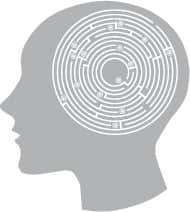
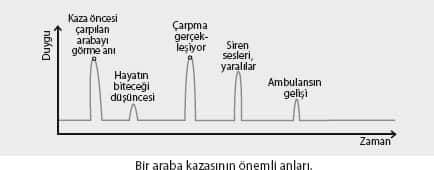
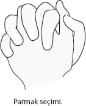

İlk kitabımda NeuroFormat® tekniğini anlaşılması açısından çok basit haliyle anlatmayı seçmiştim. Bu kitapta tekniğin daha kapsamlı halini bulacaksınız.
NeuroFormat® tekniğinin prensibi
• Çözmek istediğin problemi oluşturan bir nedene odaklan
• O neden için “en kötü” hissettiğin göz pozisyonlarını bul
• Bulduğun her göz pozisyonunda, nörolojik noktalara yavaşça vurarak kötü duyguyu temizle
• Problemi oluşturan her nedeni, tüm göz pozisyonlarında birer birer temizleyerek, problemin tamamını temizle
Tekniğin 6 aşaması var. Bunlar:
1- Konuyu belirlemek
2- Konuyu parçalarına ayırmak
3- NeuroFormat® duruşuna geçmek
4- Parçayla ilgili duyguyu tetiklemek
5- Göz pozisyonlarıyla olumsuz duyguyu yakalamak
6- Olumsuz duyguyu temizlemek
1- Konuyu belirlemek
Uygulamaya başlamadan önce tabii ki neyi “formatlamak” istediğimizi bilmemiz gerekiyor. Aslında NeuroFormat® tekniğini o an sadece kafanızdaki negatif düşüncenin etkisinden kurtulmak için bile yapabilirsiniz. Ama genelde çalışmalarınızı, hayatınızda kalıcı olan herhangi bir sorunu temizlemek ya da hafifletmek üzerine kurgulayın.
İlerleyen sayfalarda NeuroFormat® tekniğiyle hangi konuları nasıl formatlayacağımızı göreceğiz. Bir olayın etkisini bilinçaltımızdan temizlemekten herhangi bir kişiye ya da kendimize olan kızgınlığa, istediğimiz bir hedefe ulaşmamıza engel olan blokajlara kadar birçok konuda çalışma yapabiliriz.
Elimizde doğru kullanıldığı zaman, beyni formatlayan bir “silah” var. Çok güçlü ve etkili bir silah bu! Ama ne yazık ki, bu temizlik bir anda “tüm geçmişi silmek” şeklinde olamıyor.
Şimdi bir benzetme yaratalım.
Hayatımızın tümünün uzunluğundan ve beyinlerimizin
karmaşıklığından yola çıkarak, çok büyük bir
labirentte arama yaptığımızı düşünelim.
Amacımız, bu muazzam labirentte rahatsızlıklarımızın nedenleri olan hedef tahtalarını bulmak ve silahımızla ateş ederek bunları ortadan kaldırmak...

Bu benzetmede:
1- SİLAH, kullanacağımız tekniğin basit mekaniğini
2- HEDEF TAHTALARI, duygusal ve fiziksel rahatsızlığa neden olan olayları ve konuları
3- LABİRENT ise, beynimizi ve uzun hayat süremizde olan tüm olayları simgeliyor.
Oyun alanımız görebildiğimizden çok daha büyük. Beynimizin kapasitesini ve şu ana kadar yaşadığımız tüm tecrübelerin, anların sayısını düşünürseniz, bu labirentin ne kadar geniş olduğunu hayal edebilirsiniz.
Evet, olası konuların sayısı sınırsız. Ama merak etmeyin, hedeflerimize göre hangi konular üzerinde çalışmamız gerektiğini, bir başka deyişle labirentte nasıl yol alıp hangi hedef tahtalarını vurmamız gerektiğini detaylı olarak irdeleyeceğiz.
2. Konuyu parçalarına ayırmak
Yapacağımız uygulama sırasında büyük bir sorunu tek bir seferde “formatlayamayabiliyoruz”. Bu durumda sorunu yaratan “nedenleri” ayrı ayrı temizlememiz gerekiyor. Böyle yapıyoruz çünkü sorunu oluşturabilecek tüm nedenleri temizlemek istiyoruz.
Mesela, İŞİNDE BAŞARISIZ OLMA konusunda stres hissetmenin tek bir nedeni yoktur. Bundan endişe duyan birinin birçok nedeni olabilir. Mesela:
• İşten atılacağı zaman, patronun ofisine çağrılması ve bu olayın geçmişte okulda müdürün odasına çağırıldığı olumsuz olayı hatırlatması
• Atılacağı gün iş arkadaşlarına rezil olma ihtimali
• Parasız kalmaktan korkması
• Tüm çevresinin, işsiz olduğu için onu başarısız bulma ihtimali
Benzer şekilde hayatımızdaki bir travmanın etkisinden kurtulmak için negatif etkiyi yaratan tüm “anları” tekrar yaşayıp, her anı hiçbir olumsuz duygu yaratmayacak hale getirmemiz gerekiyor.

Ya da, bir kedi fobisi üzerinde çalışırken, kedinin ani hareketlerini, gözlerinin şeklini, “tırmalama ihtimali” gibi birçok nedeni teker teker temizlemek gerekiyor.
Peki, tüm nedenleri bulduğumuzu ve onları birer birer temizlemeyi başardığımızı nasıl bileceğiz?
Ya da daha önemli nedenleri temizlersek, küçükleri temizlemeden de sorunumuz tamamıyla geçebilir mi?
Ana neden
Biraz önce labirentteki hedefleri teker teker vuracağımızı söylemiştik. Sorularımıza cevap vermek için, üzerinde çalıştığımız sorunu bir ağaç gövdesine ya da hedef tahtasına benzetelim.
Tam başarı kazanmak için, hedefi tam “çekirdekten” yani 12’den vurmamız gerekiyor. Bir başka deyişle, bizim bu sorundan kurtulmamız için öncellikle ana nedenleri tespit edip onların yarattığı olumsuz duyguları temizlememiz gerekiyor.
Yukarıdaki, “işten atılma” örneğinden gidersek, ana konu kişinin çocuklarına karşı görevini yerine getirememe korkusu olabilir. Hatta belki kişinin yıllar önce borç almak zorunda kalması ve bu yüzden büyük sorunlar yaşaması gibi ilgisiz bir olay bile olabilir.
Genellikle, tek bir ana neden olmak zorunda da değildir. Sorundan tam anlamıyla kurtulmak için ana nedenlerin hepsinin ortaya çıkarılıp temizlenmesi önemlidir.
Bu noktada kafanız biraz karışmış olabilir. Merak etmeyin! Bilmeniz ve hatırlamanız gereken tek şey, sorunu oluşturan bazı nedenlerin diğerlerinden daha önemli olduğu ve sorundan tam olarak kurtulabilmek için mümkünse “ana nedenlerin” tamamının temizlenmesi gerektiği.
Temizliğe tabii ki en önemli bulduğunuz nedenlerden başlayın. Zira üzerinde çalıştığınız konuya göre, birkaç neden temizledikten sonra sorununuzun tamamıyla çözüldüğünü de tecrübe edebilirsiniz.
Hedef tahtasıyla beraber ağaç gövdesini kullanmamızın nedeni sadece “form” benzerliği değil. Özellikle geçmişte belli bir ilk olayla başlayan sorunlarımızı temizlerken, aslında temizlememiz gereken “ana neden” ilk olay olacaktır. Bir ağacın gövdesinin merkezi ilk yaşını temsil ettiği gibi, bizim için “çekirdek” İLK TRAVMA olacaktır.
3. NeuroFormat® duruşu
Bu duruş, disleksi ve kekemelik tedavisi için geliştirilmiş ve uygulandığı zaman beynin sağ ve sol loblarını maksimum koordinasyonda çalıştırıyor. NeuroFormat® tekniğini uygularken mümkün olduğunca bu duruşta kalmaya çalışın.

Sol-Sağ taraf seçimi (sadece bir kez yapılacak)
Duruş sırasında hangi kol ve ayağın önde (üstte) olduğu önemli. Parmaklarınızı şekildeki gibi kenetleyin. Hangi başparmağınız üstte? Eğer, sol başparmağınız üstte ise, sol eliniz ve sol ayağınız duruş sırasında önde olmalı.
Tam tersi olarak, sağ başparmağınız önde ise, sağ el ve ayağınız duruş sırasında önde olmalı.
Mümkün olduğu kadar bu duruşta kalmanızı istiyorum. Eğer bu duruşu kendi kendinize vuruş yaptığınız için (birazdan VURUŞLAR konusunu tüm detaylarıyla inceleyeceğiz) ya da daha farklı bir nedenden dolayı devam ettiremiyorsanız, rahat olun ve duruştan çıkın. Uygulama sırasında, sorunu tetiklemek ya da gerektiğinde daha sonra göreceğiniz NeuroFormat® vuruşlarını yapabilmek bu duruşta kalmaktan daha öncelikli.
4. Sorunu tetiklemek
Sorunu çözmek için onu yüzeye çıkartmaya ihtiyacımız var. Biz bunu genellikle OLUMSUZ ifadeler üzerinden yapıyoruz. OLUMSUZ ifadeleri oluşturmadaki başarımız, aslında genel başarımızı etkiliyor.
Burada yaptığımız şey aslında OLUMSUZ ifadelerin yarattığı olumsuz duyguları yüzeye çıkarıp, onları KALICI OLARAK FORMATLAMAK. Formatlayabildiklerimiz, sadece yüzeye çıkarabildiklerimiz. Bu açıdan TETİKLEYEBİLMEK, sorunu tamamıyla çözmek adına, en önemli ayrıntı.
Başarının anahtarı: Tetikleyebilmek
Hangi sorunun hangi parçası üzerinde çalışırsak çalışalım, o parçaya ait olumsuz duyguları yoğun şekilde ortaya çıkaran ifadeleri oluşturabilmek, tetikleyebilmek ve yüzeye çıkarabilmek aslında ne kadar başarılı olduğumuzu belirliyor.
Kitapta farklı konuları temizlerken, kullanabileceğiniz ve gerçekten olumsuz duyguları tam 12’den vuran ifadeleri nasıl oluşturacağınızı bulacaksınız. Belki okurken, size gereksiz detay gibi gelecek bu bölümler aslında ne kadar başarılı olacağınızı belirleyecek. O yüzden bu bölümleri özellikle dikkatli okumanızı öneririm.
Bu arada lütfen ifade oluşturma konusunu çok kuralcı bir hale getirmeyin. İfadenin herhangi bir dil kuralına uyması bile gerekmez. İfade kullanılmasındaki asıl amaç, sorunun temeline inilerek KÖTÜ DUYGUNUN TETİKLENMESİ ve BU DUYGUNUN TEMİZLENMESİ...
İfadeleri oluştururken mümkün olduğu kadar “olması gerekeni değil” gündelik hayatınızdaki dili kullanın. Gerekirse bela okuyun ya da küfredin... Amaç duyguların ortaya çıkarılması, kurallara uyulması değil.
Temizlemek istediğimiz soruna göre OLUMSUZ ifadeleri nasıl oluşturacağımızın detaylarını ilgili bölümlerde paylaşacağım. Bu aşamada bilmemiz gereken, büyük bir sorunun daha küçük bir parçası için OLUMSUZ bir ifade oluşturuyoruz. Ve onun için kötü hissederek, hissettiğimiz duyguları kalıcı bir şekilde temizliyoruz.